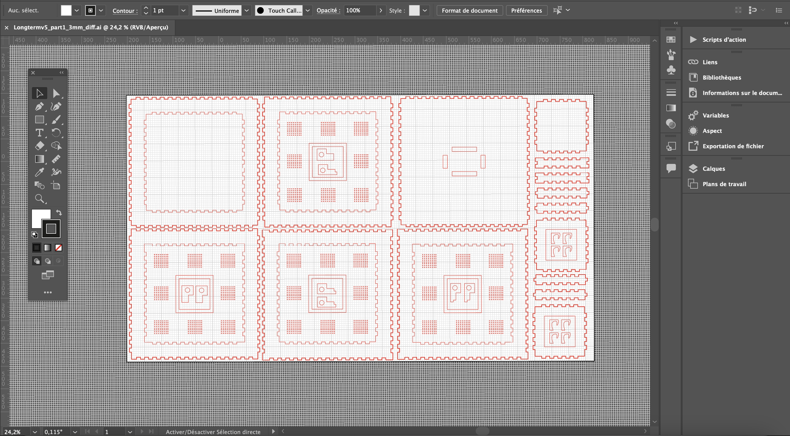
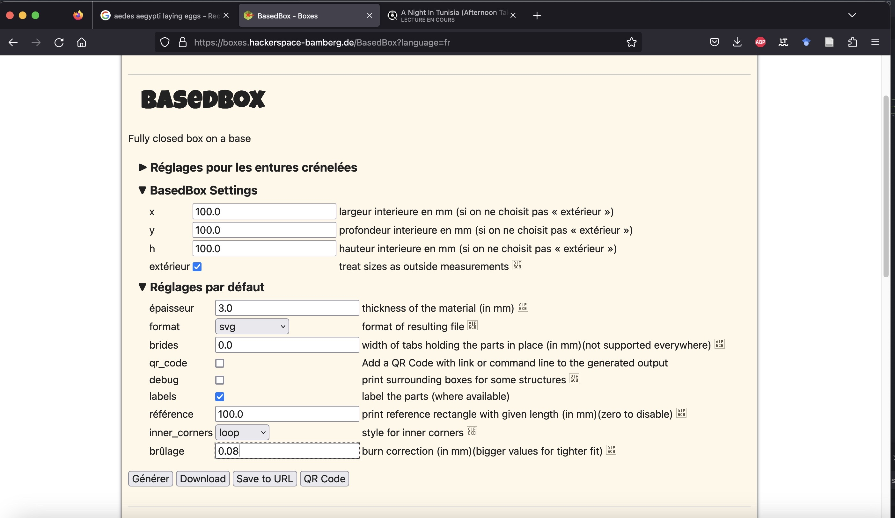
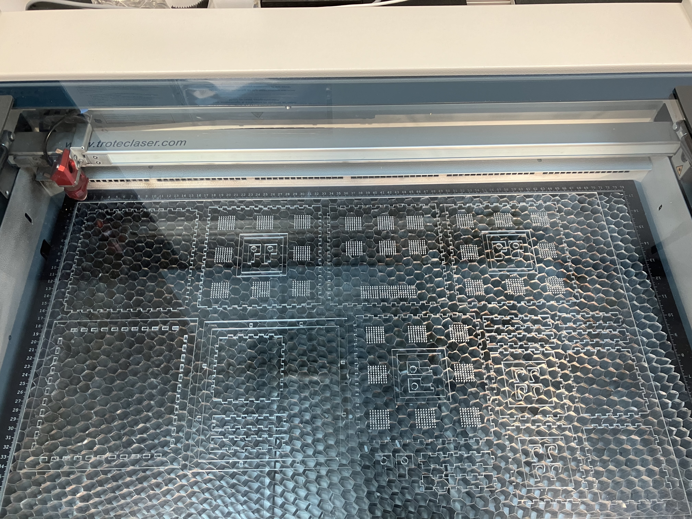
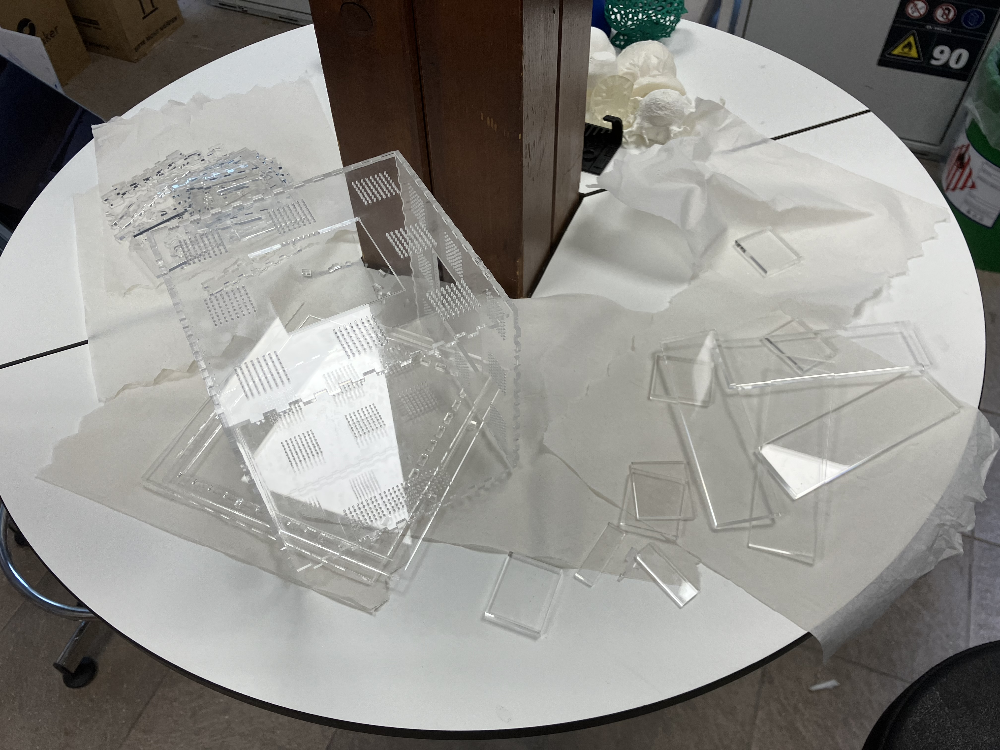
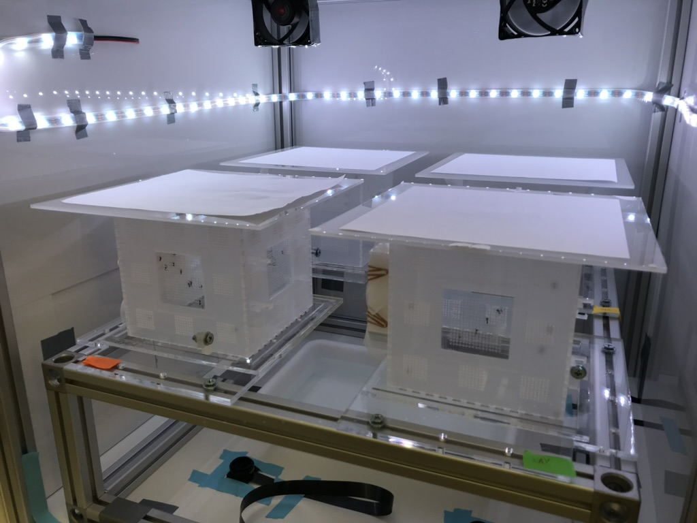

In this guide, we will detail how to build the complete "tower" BuzzWatch set-up, that be used either in a climatic chamber (see below) or in an insectarium. For other version with control of the light with LED-strip, see 1.6

- 1.1 - Design Acrylic Cage
- 1.2 - Laser Cut Acrylic
- 1.3 - Cage Assembly
- 1.4 - Raspberry Pi Camera Set-Up
- 1.5 - Complete set-up for incubator
- 1.6 - Complete set-up with home-made container
- 1.7 - [Optional] Raspberry Pi to Measure the Environment
- Complete list of materials
1.1 - Design Acrylic Cage
The plan to use for laser cutting acrylic are vector .ai illustrator files, such as this one
All necessary files can be downloaded below:
- buzzwatch_tower_part1_3mm.ai
- buzzwatch_tower_part2_3mm.ai
- buzzwatch_tower_part3_3mm.ai
- buzzwatch_tower_part4_1mm.ai
Most of the cage designs are based on this website Boxes.py.
All plans have been designed for 3mm PPMA or 1.5mm and a burn correction of 0.01. However, depending on the model of laser cutter or your specific design, you might have to modify the burning correction for a looser or tighter fit.

1.2 Laser Cut Acrylic

Pre-assemble cage and test if it fits properly (it should stay together) [add video]

1.3 Cage Assembly
- a - Assemble the main cage with the 1.5mm windows and holders.
- a bis - Assemble holder for base cage.
- b - Assemble sugar feeders and glue them.
- c - Assemble the first support structure (holding camera and cage) and glue frames.
- d - Assemble the second support structure (surrounding cage) and glue frames.
- e - Final assembly.


1.4 Raspberry Pi, Camera and light
- a - Copy the BuzzWatch image on the raspberry Pi on the
- b - Connect camera to Raspberry Pi
- c - Put camera in the holder
- d - Add infrared bandpass filter
- e - Add Raspberri Pi case with fan
- f - Put camera in the holder
- g - Add infrared light
- h - Plug External hard drive to store videos
1.5 [Optional] Raspberry Pi to Light
Instructions for setting up Raspberry Pi to control lights.
1.6 [Optional] Raspberry Pi to Measure the Environment
Complete list of materials required
List of Materials
| Material | Cost | Image | Purchase Link |
|---|---|---|---|
| Raspberry Pi 4B+ (Adapter, Case with fans, small heat dissipater) | $XX.XX |  |
Buy here |
| 64GB microSD card. SanDisk Ultra A1 MicroSDXC | $XX.XX |  |
Buy here |
| Raspberry Pi NoIR Camera Board v2 - 8 Megapixels (+ mpi connector) | $XX.XX |  |
Buy here |
| 512GB SSD external hard drive (Samsung Portable SSD T7) | $XX.XX |  |
Buy here |
| Long Pass Filter 850nm. (25mm diameter FGL850M Thorlabs) | $XX.XX |  |
Buy here |
| Case camera Adafruit Raspberry Pi P3253 (gotronic) | $XX.XX |  |
Buy here |
| Camera strip RB-CAM-1000 35861 Gotronic (1m version) | $XX.XX |  |
Buy here |
| Rpi 4 case Joy-it . CASEP4+3B 36489 | $XX.XX |  |
Buy here |
| USB-C Power supply 5.1V 3A (official Rpi supply) | $XX.XX |  |
Buy here |
Instructions for setting up Raspberry Pi to measure environmental parameters.